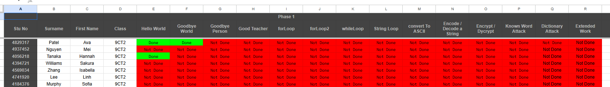

Notes on Peer Marking
1. Introduction
Peer marking is a collaborative assessment process where students evaluate each other’s work using a set of clear and consistent marking criteria. It helps students develop a stronger understanding of what good code looks like, encourages responsibility for accuracy, and builds confidence in reading and reviewing programs. In this assessment task, peer marking is used to reinforce consistent standards across the class and to give every student experience in both giving and receiving constructive feedback.
2. What Peer Marking Means in This Task
In this project, peer marking means that a student’s code is checked by another student who has already demonstrated competence in that specific subtask. Once a student’s work on a particular subtask has been reviewed and approved by the teacher, that student becomes an authorised marker for that subtask. This mirrors real-world software development, where programmers regularly review and comment on each other’s code.
3. The Peer Marking Process
Each phase of the project is broken down into smaller, clearly defined subtasks. Every subtask must be peer marked before a student moves on to the next one.
- Students complete a subtask (for example, a specific menu option or encryption function).
- Their work is then checked and approved by an authorised peer marker.
- Only after the subtask is marked can they progress to the next piece of work.
A student becomes a marker for a particular subtask only after their own solution for that subtask has been checked and approved by the teacher. Teacher approval effectively “certifies” them to mark that same subtask for other students.
To find out who is eligible to mark their work, students should consult the dynamically updated marker table. If a student’s name appears in green for a specific task, they are an approved marker and may be asked to review other students’ programs for that subtask.
4. Expectations for Markers
When acting as a marker, students must check both the correctness of the program and its overall quality. In particular, markers should verify that:
- The program runs without errors for the expected inputs.
- The output exactly matches the required model output, including spelling, punctuation, spacing, and capitalisation.
- The code follows good coding practices: clear structure, sensible variable names, and appropriate use of functions.
- All required features for that subtask have been implemented (for example, correct menu behaviour or correct encryption logic).
Once a student is marked competent for a stage, their name turns green to show they’re now a qualified marker for that stage.
5. Commenting and Documentation Standards
Proper commenting is a compulsory part of this assessment and must be checked during peer marking. Markers should confirm that:
- Every program begins with a short comment that explains what the program does.
- Every function includes a brief comment describing what the function does and how it fits into the overall program.
If these comments are missing, incomplete, or unclear, the marker should deduct marks in accordance with the marking guidelines. Clear documentation is part of writing professional-quality code and is not optional.
6. Purpose and Benefits of Peer Marking
The aim of peer marking is not only to assign marks but also to improve learning. By reading and assessing other students’ programs, markers:
- Reinforce their own understanding of Python syntax and program structure.
- See different ways of solving the same problem.
- Practise giving specific, respectful, and useful feedback.
- Develop attention to detail and a stronger sense of coding standards.
Peer marking is therefore both an assessment tool and a learning activity. Students are expected to approach it seriously and fairly, treating it as part of their responsibility as developing programmers.